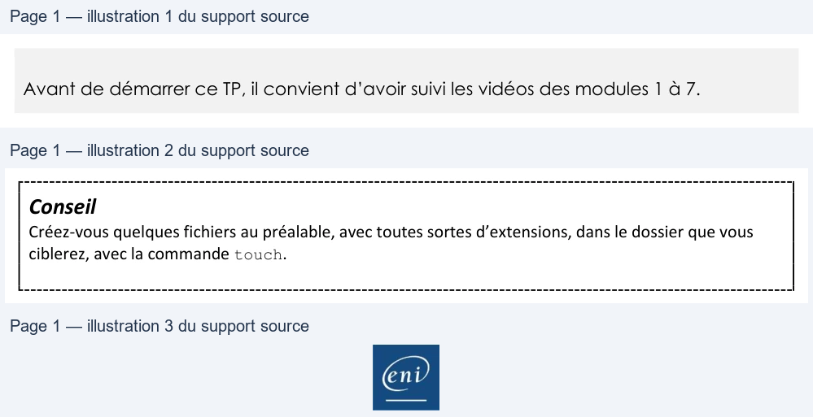

Transcription du document du Drive TSSR. La mise en forme est adaptée au Web ; les compléments IA du portail sont présentés séparément.
Initiation au scripting Bash
TP2 du Module 07 – Les structures de boucle
Avant de démarrer ce TP, il convient d’avoir suivi les vidéos des modules 1 à 7.
Créer un script Shell utilisant une instruction de boucle for.
Créer un script Shell script_M7TP2.sh permettant pour un répertoire donné, de comptabiliser les fichiers selon leurs extensions (ex : .txt, .sh, .docx etc.)
• Le script devra obligatoirement être lancé avec en argument le nom du dossier à traiter o S’il est lancé avec 0 ou plusieurs arguments -> affichage de la syntaxe d’utilisation,
puis sortie du script
• Les extensions de fichiers prises en compte par le script doivent être inscrites dans un fichier
externe (une extension par ligne)
o Les extensions non référencées ne sont pas prises en compte
Conseil
Créez-vous quelques fichiers au préalable, avec toutes sortes d’extensions, dans le dossier que vous
ciblerez, avec la commande touch.
Exemple de résultat attendu pour le dossier /tmp # ./script_M7TP2.sh /tmp Nombre total de fichiers dans /tmp : 20 ----------- .sh ----------- -> 6 fichier(s) trouvé(s) ----------- .txt ----------- -> 4 fichier(s) trouvé(s)
Page 1/1
© ENI – Tous droits réservés
